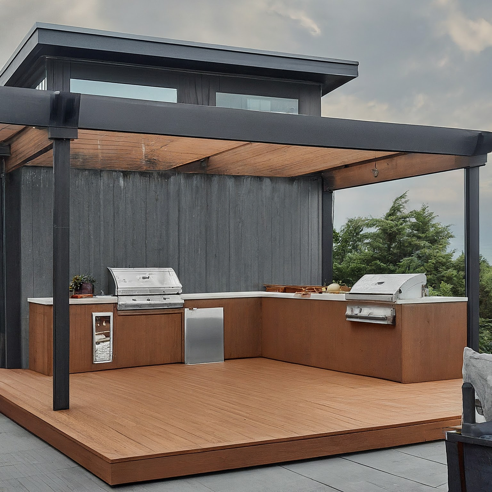
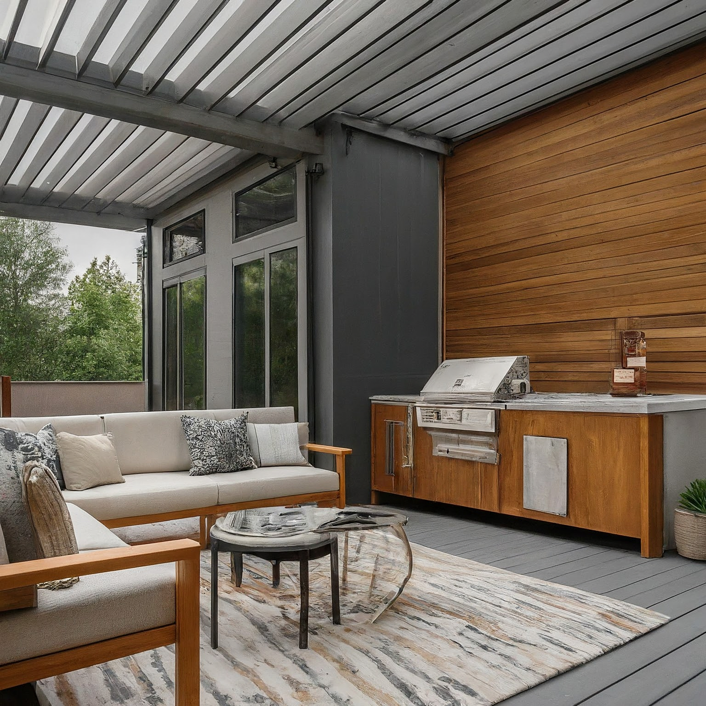
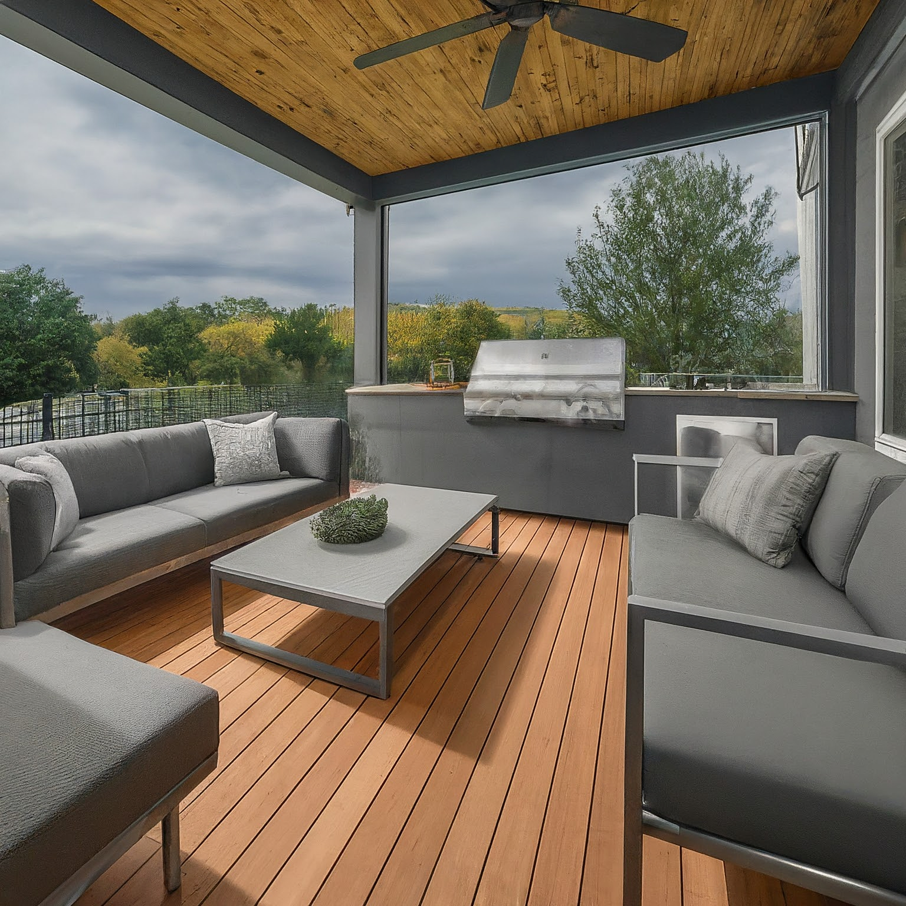
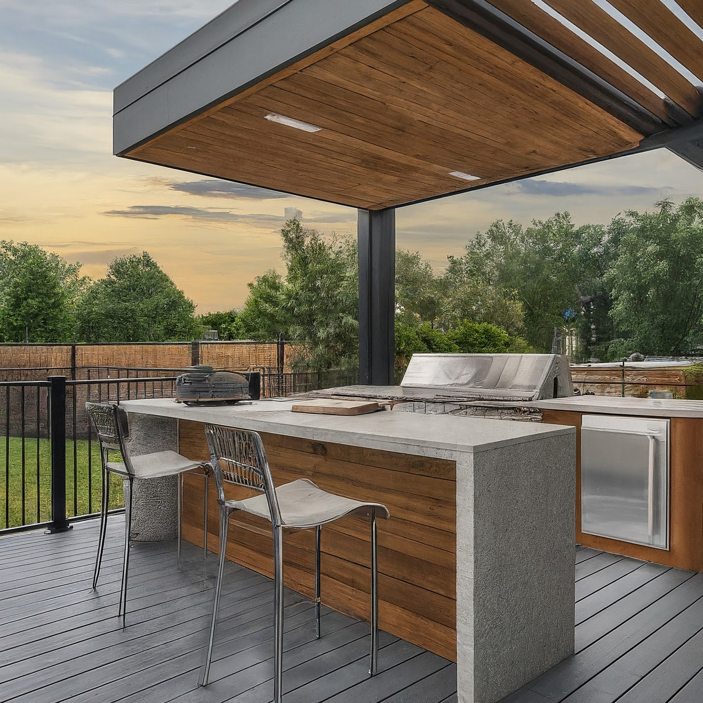

Deck with Outdoor Kitchen: Contemporary Style - Grey, Cedar Brown, and Chrome

Deck with Outdoor Kitchen: Contemporary Style - Grey, Cedar Brown, and Chrome
This design concept aims to create a sophisticated and functional outdoor living space that seamlessly blends contemporary aesthetics with natural elements. The color scheme of grey, cedar brown, and chrome provides a modern yet warm and inviting atmosphere. The deck will be designed for both relaxing and entertaining, featuring a fully equipped outdoor kitchen and comfortable seating areas.
1. Overall Concept and Style
The overall concept is to create a contemporary outdoor oasis that feels like an extension of the home’s interior. Clean lines, geometric shapes, and a minimalist approach will define the style. The deck will be divided into distinct zones for cooking, dining, and lounging, each seamlessly integrated through consistent design elements and a cohesive color palette. The space will prioritize functionality, durability, and ease of maintenance while maintaining a high level of style. The goal is a space that feels both luxurious and welcoming, suitable for intimate gatherings and larger parties.
2. Color Scheme and Materials
-
Color Scheme:
- Grey: Dominant color for decking, kitchen cabinetry, and some upholstery. Shades ranging from light concrete grey to charcoal grey will be used to add depth and visual interest.
- Cedar Brown: Used for accent elements like kitchen countertops (butcher block or simulated wood composite), seating frames, privacy screens, and planters. Provides warmth and natural contrast.
- Chrome/Stainless Steel: Used for appliance finishes, hardware, lighting fixtures, and some furniture details. Adds a touch of modern elegance and sophistication.
-
Materials:
- Decking: Composite decking in a dark grey hue for durability, low maintenance, and a sleek look. Alternative: Stained concrete pavers in a similar grey tone for a more industrial feel.
- Kitchen Cabinetry: Weather-resistant cabinetry in a dark grey finish, possibly with a textured surface for visual interest. Consider aluminum cabinets for durability and modern aesthetic.
- Countertops: Butcher block (sealed with outdoor-grade sealant) or a durable simulated wood composite material in a cedar brown tone. Quartz or granite are also options but less aligned with the warm, natural feel.
- Seating: Powder-coated aluminum frames in charcoal grey, paired with comfortable, weather-resistant cushions in varying shades of grey or a textured light grey.
- Privacy Screen: Cedar planks arranged horizontally with gaps for airflow and visual interest. Can be stained or left to weather naturally to a silver-grey tone.
- Flooring (Kitchen Area): Porcelain tile in a grey concrete-look finish for durability and ease of cleaning in the high-traffic cooking zone.
- Hardware: Chrome or stainless steel pulls and knobs for the kitchen cabinetry.
3. Furniture and Layout
-
Layout: The deck will be divided into three distinct zones: cooking, dining, and lounging. The kitchen area will be situated near the house for easy access to indoor amenities. The dining area will be positioned to take advantage of any views, while the lounge area will be arranged for comfort and conversation.
-
Cooking Zone:
- Built-in outdoor kitchen with a grill, side burner, sink, and ample countertop space.
- Weather-resistant refrigerator or beverage cooler.
- Storage cabinets and drawers for utensils, cookware, and grilling accessories.
- Bar seating at the countertop edge with comfortable bar stools.
-
Dining Zone:
- Rectangular outdoor dining table with a grey powder-coated aluminum frame and a composite wood or glass tabletop.
- Comfortable dining chairs in a complementary style, possibly with armrests.
- Optional: A cantilevered umbrella or pergola for shade during the day.
-
Lounge Zone:
- Sectional sofa with weather-resistant cushions in shades of grey.
- Coffee table in chrome and composite wood.
- Two comfortable lounge chairs or accent chairs in a complementary style.
- Outdoor rug to define the space and add warmth.
- Optional: Outdoor fire pit or fireplace for cooler evenings. This could be a gas-powered fire pit incorporated into the coffee table.
4. Lighting Design
5. Decorative Elements
- Planters: Large contemporary planters in grey or cedar brown, filled with a mix of greenery, flowers, and herbs. Consider varying heights and textures for visual interest.
- Artwork: Weather-resistant outdoor artwork, such as metal sculptures or framed prints with UV-resistant coatings. Opt for abstract or geometric designs in shades of grey, white, and hints of blue or green.
- Textiles: Throw pillows and blankets in shades of grey, white, and charcoal. Add pops of color with a few cushions in muted blue or green.
- Tableware: Contemporary outdoor tableware in grey or white, with minimalist designs.
- Accessories: Chrome or stainless steel serving trays, candle holders, and other decorative accessories.
- Privacy Screen Details: Consider adding climbing plants to the privacy screen for a natural touch.
6. Practical Considerations
- Weather Resistance: All materials must be weather-resistant and designed for outdoor use.
- Drainage: Ensure proper drainage on the deck surface to prevent water accumulation.
- Maintenance: Choose low-maintenance materials that are easy to clean and maintain.
- Safety: Consider safety features such as railings, non-slip surfaces, and adequate lighting.
- Permitting: Check local building codes and obtain necessary permits for the outdoor kitchen and any structural modifications.
- Utilities: Plan for gas lines, electrical outlets, and water connections for the outdoor kitchen.
- Storage: Incorporate storage solutions for outdoor furniture cushions, grilling tools, and other accessories.
- Accessibility: Ensure the deck is easily accessible from the house and yard. Consider adding ramps or gradual slopes for wheelchair accessibility if needed.
- Bug Control: Consider installing screens or using citronella candles or torches to deter insects. A ceiling fan over the dining area can also help.
- Sun Protection: A pergola, awning, or large umbrella can provide shade and protection from the sun. Choose materials with a high UPF rating.
This detailed plan provides a strong foundation for creating a stunning and functional outdoor living space. Remember to tailor the design to your specific needs, preferences, and the unique characteristics of your property. Good luck!

Deck with Outdoor Kitchen: Contemporary Style - Grey, Cedar Brown, and Chrome - View 2

Deck with Outdoor Kitchen: Contemporary Style - Grey, Cedar Brown, and Chrome - View 3

Deck with Outdoor Kitchen: Contemporary Style - Grey, Cedar Brown, and Chrome - View 4